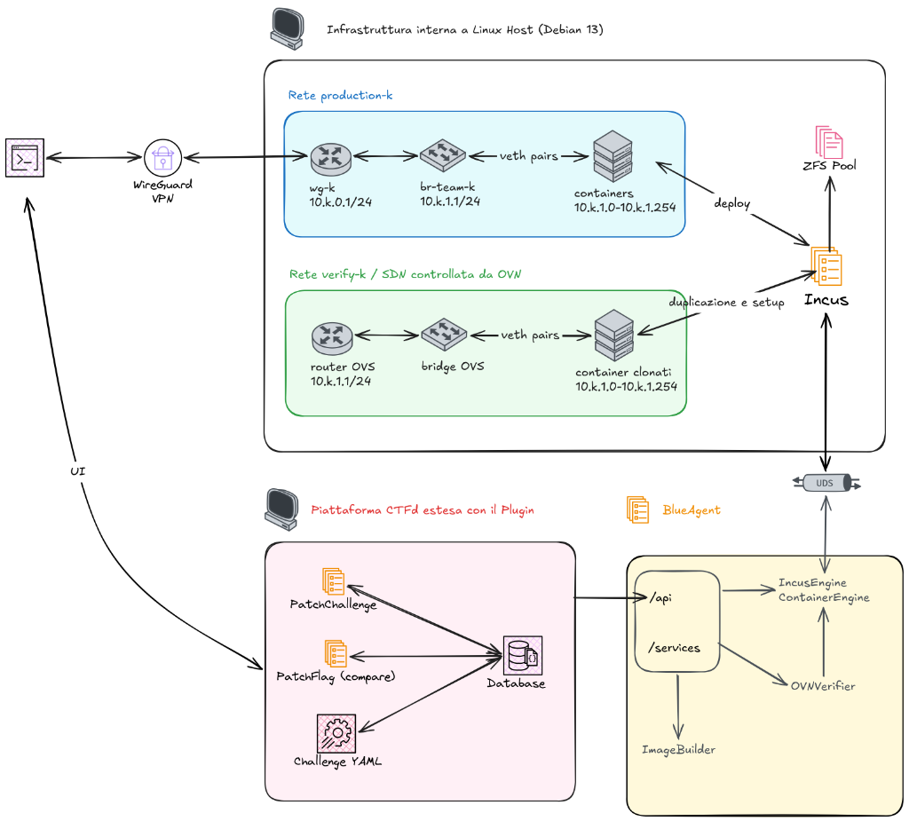
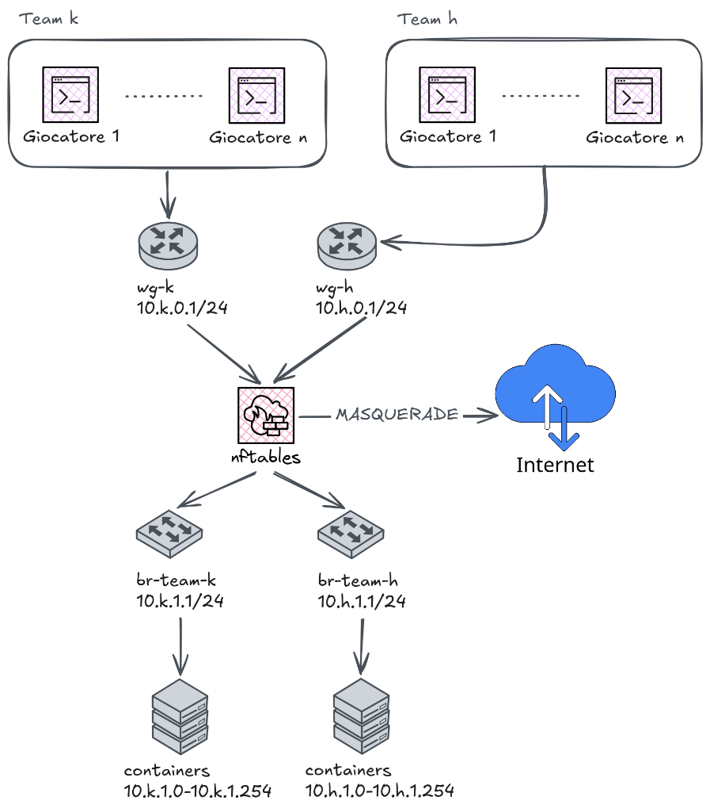
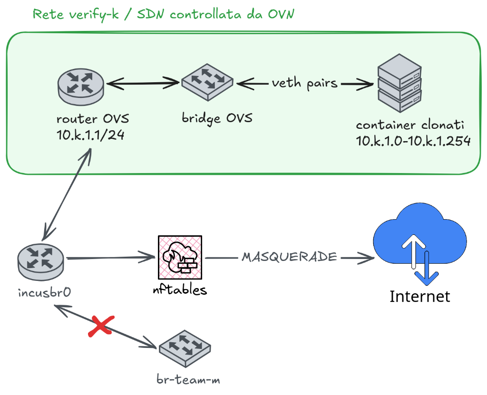
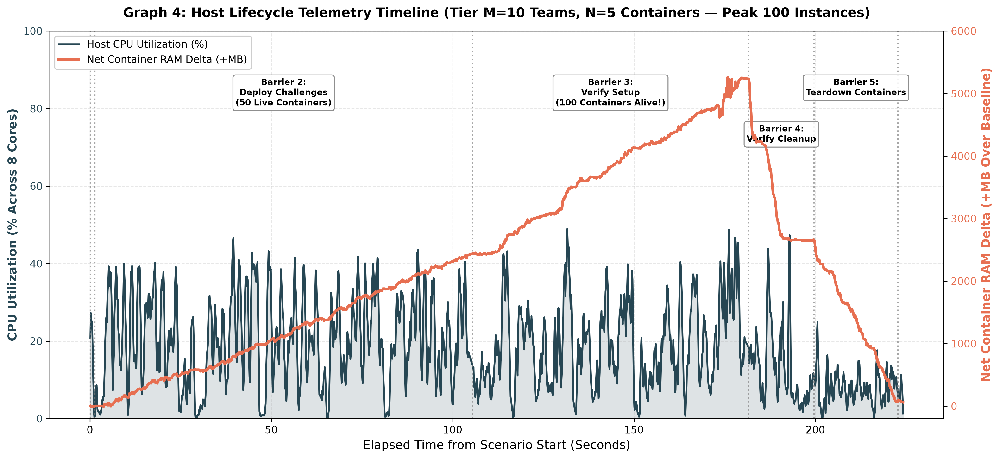

Corso di Laurea in Informatica Triennale
BlueAgent
Candidato: Davide Luci
Matricola: 0341922
Relatore: Prof. Pierpaolo Loreti
Correlatore: Ing. Francesco Mancini
Il Problema: CTF Classiche vs CTF Difensive
CTF Classica (Offensiva / Jeopardy)
Obiettivo: Sfruttare una vulnerabilità per leggere un segreto.
/root/flag.txt
Verifica Banale: il giocatore non ha accesso privilegiato alla macchina prima dell'exploit. Basta confrontare la stringa flag{...} su CTFd.
CTF Difensiva (Patching & Hardening)
Obiettivo: Correggere la vulnerabilità mantenendo attivo il servizio.
root
systemctl
Perché è complesso: essendo già root, il giocatore leggerebbe qualsiasi flag statica e può intercettare i test dell'oracolo (tcpdump, pspy) per fingere la patch!
La Nostra Proposta: Obiettivi di BlueAgent
1. System Container
Ambienti multi-servizio completi basati su Incus e ZFS con systemd nativo (PID 1).
✔ Basso uso RAM
2. Topologie Multi-Nodo
Rete privata dedicata per ogni team (10.k.1.0/24) accessibile via tunnel WireGuard.
✔ Isolamento
nftables tra team
3. Verifica Invisibile
Oracolo automatico fuori banda su cloni Copy-on-Write in rete SDN OVN isolata.
✔ Nessun impatto sulla produzione
Confronto con lo Stato dell'Arte
| Piattaforma / Soluzione | Container (No VM) |
Persistenza &systemd |
Topologia LAN Multi-Nodo |
Oracolo di Verifica Automatica |
Verifica Invisibile (Zero Side-Channel) |
|---|---|---|---|---|---|
| kCTF (Google) | ✔ | ✘ | ✘ | ✔ | ✘ |
| CTFBox (Attack/Defense) | ✔ | ✔ | ✘ | ✔ | ✘ |
| CyTrONE (Cyber Range) | ✘ | ✔ | ✔ | ✘ | ✘ |
| CyberRangeCZ (OpenStack) | ✘ | ✔ | ✔ | ✘ | ✘ |
| CyberPatriot (Agente VM) | ✘ | ✔ | ✘ | ✔ | ✘ |
| BlueAgent (Proposta di Tesi) | ✔ | ✔ | ✔ | ✔ | ✔ |
Architettura del Sistema e Componenti Software

Il Problema dell'Oracolo: Come Verificare senza Side-Channel?
diff / SAST)
Cerca pattern specifici nei file; può fallire su patch equivalenti e ignora lo stato runtime del servizio.
Il giocatore intercetta i payload dell'oracolo con tcpdump e filtra selettivamente solo l'IP del verificatore.
incus exec)
Il comando iniettato compare in /proc: il giocatore lo cattura in tempo reale con pspy.
✔ Soluzione BlueAgent: Sandbox Efimera
La verifica non tocca mai i container presidiati dal giocatore:
10.k.1.0/24), inaccessibili tramite WireGuard.
readiness_commands) + Exploit (verify_commands) e distrugge la sandbox.
Ciclo di Vita della Sandbox: OVNVerifier (Pattern RAII)
Gestito tramite Async Context Manager Python per garantire la distruzione deterministica della sandbox anche in caso di eccezioni o timeout:
__aenter__
Clonazione & SDN
- Crea la rete OVN isolata
verify-k. - Clona i container di produzione su ZFS Copy-on-Write.
- Avvia i cloni e il container
verifieropzionale suverify-k.
run_checks
Esecuzione Controlli
- White-Box: iniettati nei cloni via
incus exec. - Black-Box: lanciati dal nodo
verifierverso i cloni. - Verifica
readiness_commands(con retry) everify_commands(exit code0).
__aexit__
Pulizia Garantita
- Elimina forzatamente tutti i cloni, il
verifiere lo switch OVNverify-k. LifecycleManager: rimuove eventuali risorse orfane.
Rete di Produzione: production-k
1. Subnet & Bridge Dedicato
Ogni team $k$ dispone di una LAN privata 10.k.1.0/24 attestata sul bridge Linux br-team-k (gateway 10.k.1.1).
2. Accesso VPN WireGuard
Interfaccia wg-k (porta UDP $51820+k$, gateway 10.k.0.1/24) con IP peer 10.k.0.x/24 per accedere ai container via SSH/HTTP.
3. Isolamento Rigoroso Inter-Team
Tabella nftables inet blueagent con set dinamico @team_links: drop totale del traffico tra team diversi.

Rete di Verifica: verify-k (SDN, OVN e OpenFlow)
1. Switch e Router Logico OVN
Incus orchestra nativamente un Logical Switch (LAN) e un Logical Router (gateway 10.k.1.1), mantenendo gli stessi IP di produzione senza conflitti.
2. Pipeline OpenFlow & OVS
I demoni ovn-northd e ovn-controller traducono la topologia in flussi OpenFlow eseguiti da openvswitch.ko nel kernel, isolando il traffico senza toccare il routing dell'host.
3. Nodo Verifier Dedicato (.250)
Runner opzionale nella stessa LAN virtuale (10.k.1.250) per eseguire test Black-Box (curl, exploit di rete) verso i container clonati.

Uscita dalla Sandbox: SNAT a Due Stadi
Disaccoppia gli IP della sandbox (10.k.1.0/24) per evitare che il traffico di risposta collida con la rotta di produzione (br-team-k) sul kernel host.
src: 10.k.1.xClone ➔ Router OVN
10.k.1.x ➔ 172.16.0.xLogical Router OVN
src: 172.16.0.xBridge
incusbr0
172.16.0.x ➔ IP HostHost
nftables
src: IP HostHost ➔ Internet
172.16.0.x solo sul bridge incusbr0. Nessun pacchetto con IP 10.k.1.x attraversa lo stack IP dell'host per l'accesso a Internet, garantendo la totale assenza di collisioni con la produzione.
Configurazione Dichiarativa della Challenge (YAML)
1. containers & Risorse Cgroups
Ogni nodo dichiara image, ip_suffix (ultimo ottetto statico 10.k.1.X) e limiti hardware limits_cpu e limits_memory.
2. verifier (Runner Efimero)
Container di test opzionale (ip_suffix: 250) avviato solo nella sandbox SDN per simulare attacchi di rete Black-Box.
3. readiness_commands
Controlli con timeout e retry eseguiti all'avvio della sandbox per attendere il bootstrap dei servizi prima della verifica.
4. verify_commands & Template IP
Combina check White-Box (target: container) e Black-Box (target: verifier), risolvendo dinamicamente {{ip:<name>}}.
Validazione (1/4): Confronto Fasi del Ciclo di Vita
- B2 (Deploy Challenges): penalizzato dalla decompressione del rootfs e dal primo avvio di
systemd. - B3 (Verify Setup CoW): nonostante crei rete OVN + cloni + rotte, risulta più veloce di B2 grazie a ZFS Copy-on-Write.
- B4–B5 (Cleanup & Teardown): rimozione rapida (15–24 s); B1/B6 (Reti Team): trascurabili (< 1.6 s).

Validazione (2/4): Clonazione CoW vs Deploy da Zero
- Vantaggio ZFS: evita la copia fisica dei blocchi disco, abbattendo la latenza al crescere dei container.
- Confronto a parità di 50 container (100 di picco):
10×5ottiene uno speedup di clonazione superiore (3.6× / 3.4×) rispetto a5×10(2.3× / 1.8×).- Uvicorn parallelizza le richieste dei 10 team, mentre la clonazione intra-team è sequenziale (5 vs 10 nodi/task).

Validazione (3/4): Scomposizione in Sotto-Fasi
- Collo di bottiglia B2 (Pannello A): oltre l'80% del tempo di deploy è assorbito dall'estrazione del filesystem (
Image Unpack) e dal boot disystemd. - Composizione B3 (Pannello B): eliminato l'unpack, il tempo si divide tra clonazione ZFS,
NIC Rebindsu OVN, avvio dei cloni e rotte statiche.

Validazione (4/4): Impatto Memoria RAM e Timeline CPU
- Crescita RAM Lineare: la condivisione del kernel Linux e della page cache ZFS permette di ospitare 100 nodi in soli 5.2 GB.
- Profilo CPU (I/O-bound): utilizzo contenuto tra il 10% e il 45% sugli 8 core durante le fasi attive, senza mai saturare l'host.


Conclusioni e Spazio alle Domande
Davide Luci
Matricola: 0341922
Informatica Triennale — Tor Vergata
Obiettivi Raggiunti
- System Container Leggeri: persistenza delle patch e
systemdnativo con ~52 MB RAM/nodo. - Verifica Fuori Banda Invisibile: cloni ZFS CoW (speedup 3.6×) isolati in SDN OVN & OpenFlow.
- Integrazione Chiavi in Mano: plugin CTFd + API asincrona FastAPI configurabile via YAML.
Sviluppi Futuri
CLI bluecmd standalone per debug locale • Polling SLA periodico automatico • Topologie YAML multi-subnet con router intermedi.
Casi d'Uso e API REST di BlueAgent Backup 1/4
Crea il bridge br-team-k (10.k.1.1/24), l'interfaccia wg-k (UDP $51820+k$, 10.k.0.1/24) e registra il team.
Istanzia i container del team su br-team-k da YAML, applica i limiti Cgroups e configura gli IP statici 10.k.1.X.
Crea la sandbox OVN verify-k, clona i nodi in CoW, esegue comandi di readiness e verifica (White/Black Box).
Arresta ed elimina tutte le istanze dei container associati alla challenge per il team $k$, rilasciando le risorse.
UC-05 Compilazione Immagine con Distrobuilder (PUT /images/{alias}) • UC-06 Registrazione Membro WireGuard (PUT /teams/{team_k}/members/{user_id}).
Concorrenza (TwoTierLock) e Pipeline Asincrona Backup 2/4
TwoTierLock Ibrido per Risorsa
- 1° Livello (
asyncio.Lock): sincronizza le coroutine all'interno dello stesso worker senza bloccare l'event loop. - 2° Livello (
fcntl.flock): file lock del kernel Linux (/tmp/blueagent_locks/) per sincronizzare worker Uvicorn multi-processo. - Granularità per Team: serializza
team-klasciando procedere in parallelo gli altri team.
Pipeline Asincrona verso Incus
- Comunicazione HTTP su Unix Domain Socket (
/var/lib/incus/unix.socket) tramitehttpx.AsyncClient. - Operazioni pesanti avviate in background (
202 Accepted) e attese con/1.0/operations/<uuid>/wait. - Esecuzione non bloccante: l'event loop elabora in parallelo le richieste degli altri team durante le attese di I/O.
Immagini Custom (Distrobuilder) e Caching SHA-256 Backup 3/4
Build Automatica con Distrobuilder
- I container di sistema Incus richiedono un rootfs completo con
systemd+incus.tar.xz. ImageServiceinvocadistrobuilder build-incusin modo asincrono a partire da un descrittore YAML.- Inietta automaticamente pacchetti, servizi vulnerabili e script di test per il
verifier.
Caching Deterministico SHA-256
- Calcola il digest SHA-256 della definizione YAML dell'immagine.
- Registra nella tabella SQLite
imagesl'alias, ilconfig_hash, lo stato (READY/BUILDING) e ibuild_logs. - Cache Hit: salta la ricompilazione se l'immagine è già presente in Incus e l'hash coincide.
Confronto Architetture di Rete per la Sandbox (Cap. 6.5) Backup 4/4
| Architettura Analizzata | Fedeltà di Rete | Accesso WAN | Complessità Software | Overhead Risorse |
|---|---|---|---|---|
| 6.1 Bridge L2 (senza GW) | Bassa (nessun default gateway) | Assente | Minima (bridge kernel) | Quasi nullo |
| 6.2 Interfaccia wan1 | Scadente (interfaccia anomala) | Presente (tramite wan1) | Media (routing custom container) | Basso |
| 6.3 NetNS separato | Buona (topologia identica) | Presente (coppia veth) | Elevata (gestione manuale veth) | Basso |
| 6.4 Router intermedio | Buona (topologia identica) | Presente (SNAT su router) | Medio-alta (container dedicato) | Medio (+1 container) |
| BlueAgent (OVN SDN) | Buona (topologia identica) | Presente (SNAT a 2 stadi) | Minima (delegata a Incus) | Basso (condiviso) |